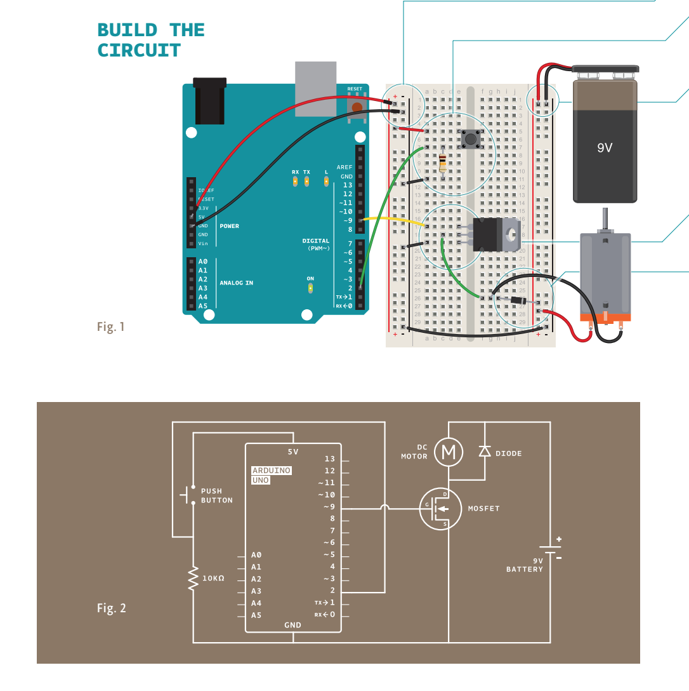
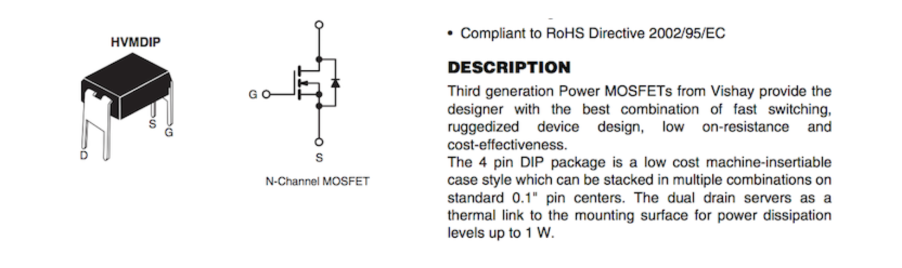
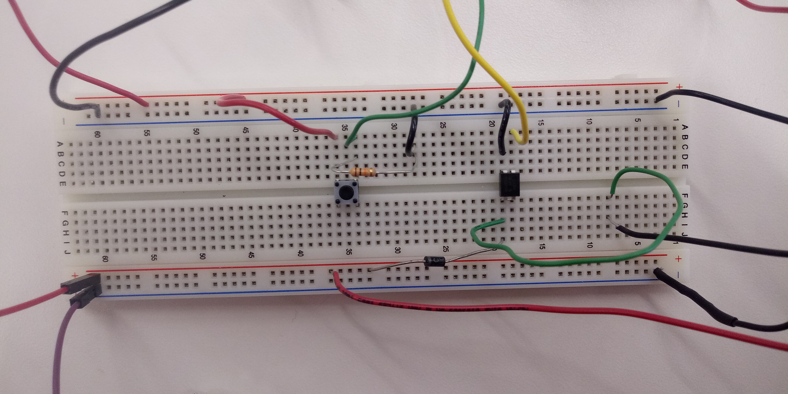
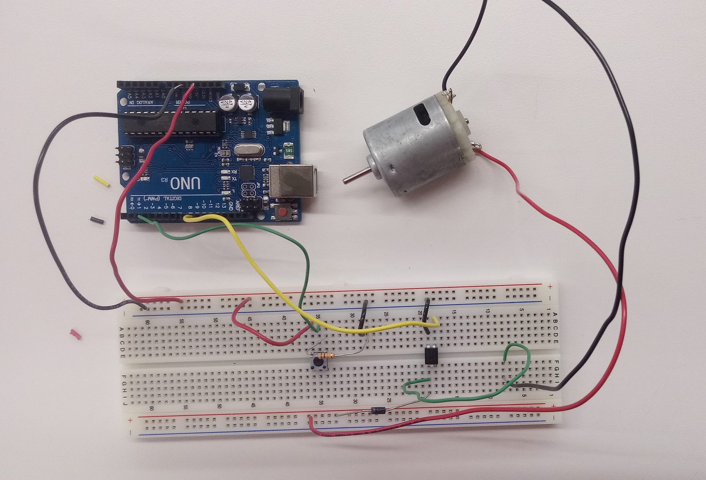
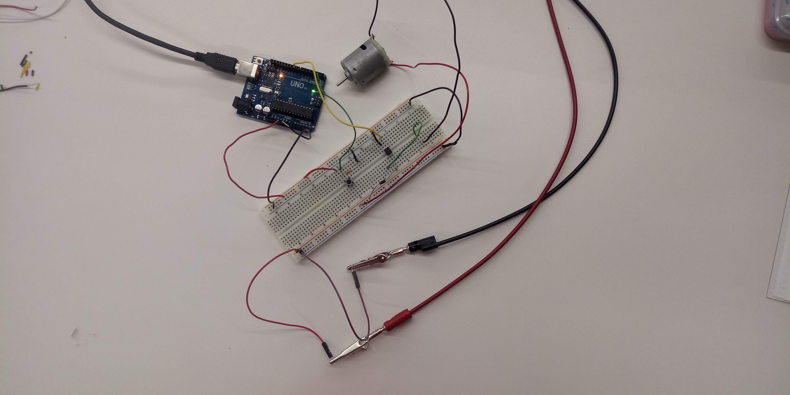

This week was about redemption! My goal was to make the gears from last week work, and with a circuit hooked up to it (so that the motor goes when you press the button!). I mostly followed the instructions from the Arduino Projects Book.
I mainly followed the motorized pinwheel instructions, as well as some instructions on transistors from the course website.
 This helped me figure out on our transistors which parts were the drain, source and ground. I then hooked up the circuit like in the project book, using a generator instead of a battery. I also included the diode, which is put in backwards, to protect the circuit since the motor generates a backwards current that can damage the circuit.
  The code I used was rather simple. I had some issues connecting the board to my computer, but I eventually figured out that it was a problem with the board and not with my laptop, and when I switched it out for another board, everything went well.
const int switchPin = 2; //keep track of pins (digital)
const int motorPin = 9;
int switchState = 0; //keep track of the switch
void setup() {
// put your setup code here, to run once:
pinMode(motorPin, OUTPUT);
pinMode(switchPin, INPUT);
}
void loop() {
// put your main code here, to run repeatedly:
switchState = digitalRead(switchPin);
if (switchState == HIGH) {
digitalWrite(motorPin, HIGH);
}
else {
digitalWrite(motorPin, LOW);
}
}
Code formatted with Google prettify, Sons of Obsidian! But it isn't quite compatible with arduino.
The code just takes in the correct pins, sets the motor pin to an output pin and the switch pin to an input pin, then constantly reads the switch pin. The switch pin returns HIGH if it is being pressed and LOW if it isn't. Then a simple if statement makes the motor turn if the switch is being pressed.